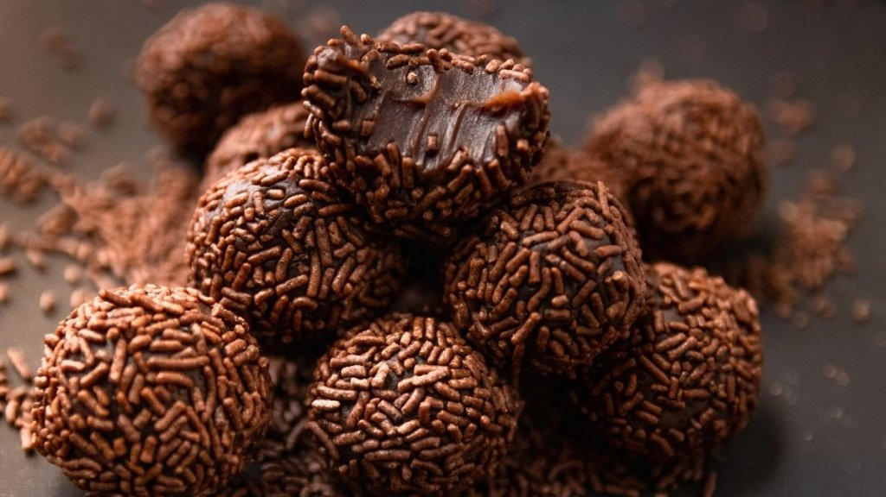

Receita de Brigadeiro Caseiro

Receita
- 1 caixa de leite condensado
- 7 colheres (sopa) de
achocolatado ou 4 colheres (sopa) de chocolate em pó
- 1 colher (sopa) de margarina sem sal
- chocolate granulado
Modo de preparo
- Em uma panela funda, acrescente o leite condensado,
a margarina e o chocolate em pó.
- Cozinhe em fogo médio e mexa até que o brigadeiro
comece a desgrudar da panela.
- Deixe esfriar e faça pequenas bolas com a mão passando
a massa no chocolate granulado.
Site criado pelos 3° anos do @colegiosaoluiz3